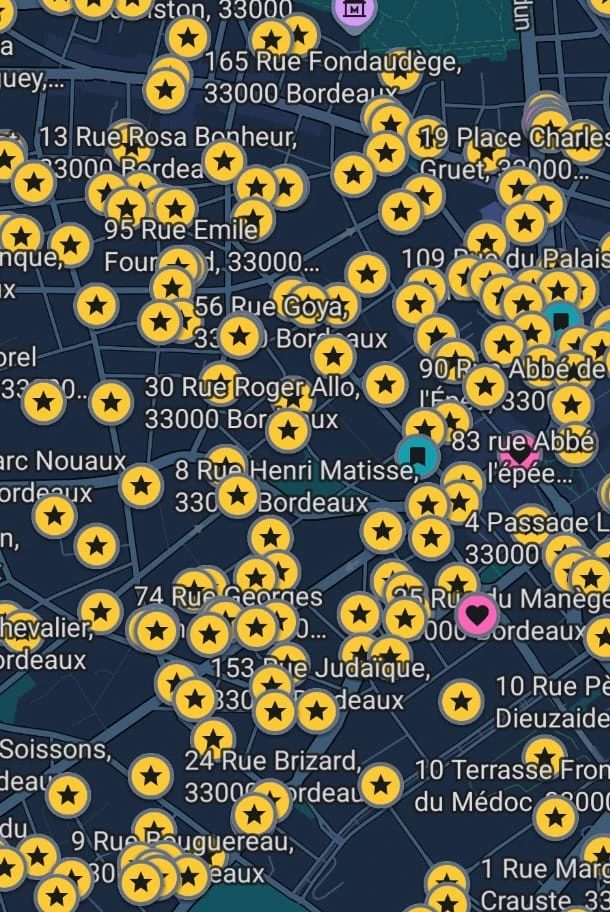
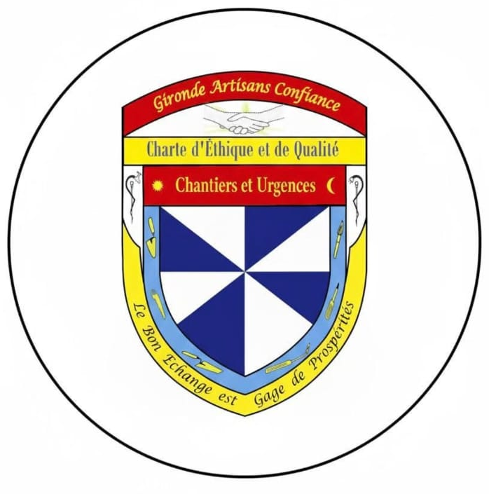

Vous Cherchez Un Plombier Digne de Confiance à Bordeaux
Avec Didier DESBORDES
Vous êtes A la Bonne Adresse !
Un Artisan digne des Artisans d'autrefois !
Un plombier qui sera autant soucieux de la qualité de son travail que de vos intérêts !
Un plombier qui va même vous conseiller par téléphone afin de vous éviter une intervention inutile !
Un plombier qui vous facturera honnêtement son travail ! Et ce n'est pas un hasard s'il a eu près de 300* avis clients 5 étoiles !
* Google (avant changement d'adresse), Pages Jaunes et Facebook
Faites Confiance A Didier DESBORDES Appelez Le Au 06 11 60 92 18 !
Une fuite, un WC bouché, un chauffe-eau en panne, un changement de robinetterie, une salle de bain à rénover, une clim réversible / pompe à chaleur à installer, ou un chantier complet en électricité, plomberie ou chauffage ?
Non seulement Monsieur Desbordes a une éthique, mais il sait également faire preuve de générosité. Panne sur ma chaudière un samedi à 17h30, température proche de zéro dehors, femme et nourrisson qui doivent revenir de la maternité le lundi... De grosses difficultés à trouver un chauffagiste en urgence. Monsieur Desbordes a pris le temps d'échanger avec moi, de passer un coup de téléphone à une autre entreprise de sa connaissance. Bilan : à 21h, le problème était réglé. Je vais pouvoir accueillir ma petite famille dans de bonnes conditions. Merci Monsieur Desbordes.
Gibril Limouri – Google
★★★★★
A l'heure, rapide, efficace et transparent sur les prix, avec lui pas de surprise sur la tarification, vous pouvez y aller. L'intervention concernait un débouchage de WC. Il m'a même proposé une assistance technique par téléphone avant d'intervenir, qui m'aurait coûté quelques dizaines d'euros.
François Goube – Google
★★★★★
J'ai sollicité M. Desbordes en urgence. Supers conseils par téléphone pour mon WC bouché. La méthode proposée a fonctionné mais plusieurs jours plus tard je craignais un nouveau bouchon. Trop stressé que j'étais ! M. Desbordes a réalisé un diagnostic en ne me facturant qu'une demi-heure. Tout allait bien. Un artisan extrêmement honnête et que l'on sent passionné non seulement par son métier mais aussi par le fait de prendre soin de ses clients. Je recommande évidemment !
Monique Bats – Google
★★★★★
J'ai une fuite d'eau dans ma cuisine depuis une semaine, un premier plombier est venu mais sans changement puisque le voisin du dessous a toujours de l'humidité sur son plafond. Ce matin samedi, je m'aperçois que le mur de ma chambre est humide et derrière, dans la cuisine, il y a la machine à laver. J'ai fait appel à M. Desbordes avec qui j'avais eu un entretien téléphonique qui m'avait rassurée. J'avais lu les avis qui n'ont fait que conforter mon choix. Ce monsieur a été obligé de sortir la machine, ce qui n'était pas aisé, mais avec détermination, précision, il y est arrivé. Derrière, le raccord de la machine à laver était desserré. Il y avait de l'humidité et surtout des traces noires dues à l'aggloméré des parois du meuble, qui étaient trempées. Ces taches noires étaient perceptibles sur le plafond du voisin. Il a nettoyé tout cela, remis la machine en place. Je recommande cet artisan, qui travaille avec précision, compétence, qui a l'amour de son travail pour rendre service à autrui.
Aki Riel – Google
★★★★★
Monsieur Desbordes est intervenu chez moi suite à une fuite au niveau de mon cumulus : réponse rapide, explication sur le devis et le matériel choisi, rapidité d'intervention. Je tiens à préciser qu'il est intervenu pendant la semaine de Noël, pour un appel le lundi, enlèvement et changement le vendredi. Il répond à toutes les questions et on a même droit en bonus à des petits conseils (entretien du groupe de sécurité, arrivée d'eau à tourner une fois par mois, même pour le compteur électrique). Je ne peux que vous recommander un véritable artisan compétent, efficace, et en prime sympathique !
Baptiste Garro – Google
★★★★★
Un professionnel au top. M. Desbordes est intervenu sur mon WC sanibroyeur, suite au blocage de celui-ci à cause d'une lingette. Il a fallu tout démonter pour accéder au moteur et extraire la lingette. On remarque tout de suite sa bienveillance et son professionnalisme, je ne peux que le recommander. Sans oublier le tarif qui était raisonnable.
Thom73 – PagesJaunes, Bordeaux
★★★★★
Très professionnel et hyper disponible. Monsieur Desbordes est fiable et efficace. C'est le meilleur artisan à qui j'ai eu affaire, que ce soit pour des travaux ou des urgences. Tarifs tout à fait corrects, d'autant qu'il tente souvent d'établir un diagnostic avant intervention par téléphone ou photos. Je recommande avec plaisir.
Anne-Caroline d'Arnaudy – Google
★★★★★
Un artisan expert, sérieux et très professionnel. Monsieur Desbordes est intervenu un samedi en urgence avec succès. Je le recommande vivement.
Giulia Nde – Google
★★★★★
M. Desbordes est très réactif, il a identifié et réparé le problème très rapidement. Transparent au niveau des tarifs qui sont très corrects. Merci pour votre intervention !
Simon Thompson – Google
★★★★★
Monsieur Desbordes m'a été conseillé par un ami. Bonne pioche ! Il est intervenu avec succès sur un bateau à moteur (il m'a prévenu que cela n'était pas sa spécialité). Consciencieux, il n'a pas lâché l'affaire avant de réparer la panne. Merci beaucoup !
Ebe – PagesJaunes, Paris
★★★★★
M. Desbordes est intervenu très rapidement, avec une totale efficacité, dans une situation d'urgence avec panne complète d'électricité dans l'appartement. C'est un grand professionnel qui a su détecter l'origine du dysfonctionnement, alors qu'Enedis n'avait pas réussi à l'identifier dans un premier temps. Je le recommande vivement.
Avis déposés par mes clients sur Google et PagesJaunes.
Partout dans Bordeaux

Chaque étoile est une adresse de mon répertoire client·e·s. Y a-t-il votre rue ? 😉
Horaires
Lundi
7h45 – 20h30
Mardi
7h45 – 20h30
Mercredi
7h45 – 20h30
Jeudi
7h45 – 20h30
Vendredi
7h45 – 20h30
Samedi
7h45 – 20h30
Dimanche
7h45 – 20h30
Mon réseau d'artisans

J'anime un réseau Gironde Artisans Confiance, des artisans réunis autour d'une Charte d'Éthique et de Qualité que j'ai moi-même fondée il y a une quinzaine d'années.
Avec mes confrères, nous couvrons quasiment tous les métiers du bâtiment, petits ou grands travaux.
Si votre problème n'est pas de mon ressort (ou que je ne suis pas disponible, ça arrive souvent passé 60 ans 😜), je vous mettrai en relation avec un artisan compétent et de confiance, ou Vous serez même Directement Reçu au Téléphone par un Confrère De Confiance 🙂
Besoin d'un plombier, d'un électricien, d'un chauffagiste, d'un dépanneur en chaudières gaz, d'un climaticien à Bordeaux et sa métropole ?